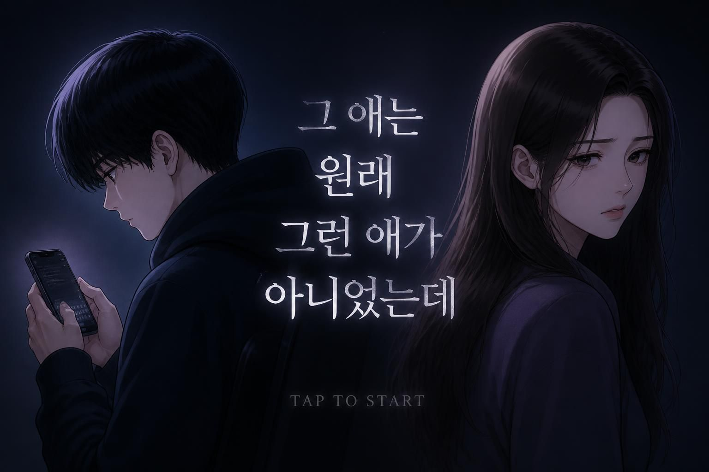

<!DOCTYPE html>
<html lang="ko">
<head>
<meta charset="UTF-8">
<meta name="viewport" content="width=device-width, initial-scale=1.0">
<title>그 애는 원래 그런 애가 아니었는데</title>
<link rel="preconnect" href="https://fonts.googleapis.com">
<link rel="preconnect" href="https://fonts.gstatic.com" crossorigin>
<link href="https://fonts.googleapis.com/css2?family=Noto+Serif+KR:wght@400;600;700&family=Noto+Sans+KR:wght@400;500;700&display=swap" rel="stylesheet">
<style>
  * { box-sizing: border-box; }
  html, body { margin: 0; padding: 0; }
  body {
    min-height: 100vh;
    background: radial-gradient(1200px 800px at 50% -10%, #362a44 0%, #241b2f 55%, #1a1422 100%);
    display: flex;
    align-items: center;
    justify-content: center;
    padding: 32px 16px;
    font-family: 'Noto Sans KR', sans-serif;
    color: #f1e9dd;
    word-break: keep-all;
    overflow-wrap: break-word;
  }
  #root { width: 100%; }
  .card {
    width: 100%;
    max-width: 720px;
    margin: 0 auto;
    background: #1f1826;
    border: 1px solid rgba(241,233,221,0.08);
    border-radius: 20px;
    box-shadow: 0 30px 60px rgba(0,0,0,0.45);
    overflow: hidden;
  }
  .titlebar {
    padding: 18px 22px 14px;
    display: flex;
    align-items: baseline;
    justify-content: space-between;
  }
  .titlebar .day {
    font-family: 'Noto Serif KR', serif;
    font-weight: 600;
    font-size: 14px;
    color: #e8a33d;
    letter-spacing: 0.02em;
  }
  .body-pad { padding: 26px 24px 24px; }
  .card--ending { display: flex; flex-direction: column; min-height: 890px; }
  .card--ending .titlebar { padding-bottom: 4px; }
  .card--ending .body-pad {
    padding-top: 12px;
    flex: 1;
    display: flex;
    flex-direction: column;
    justify-content: space-between;
  }

  .choice-btn, .replay-btn, .continue-btn {
    width: 100%;
    text-align: left;
    background: #2c2237;
    border: 1px solid rgba(241,233,221,0.1);
    color: #f1e9dd;
    border-radius: 12px;
    padding: 14px 16px;
    font-family: 'Noto Sans KR', sans-serif;
    font-size: 14px;
    cursor: pointer;
    transition: all 0.15s ease;
    margin-bottom: 10px;
  }
  .continue-btn { text-align: center; background: #e8a33d; color: #241b2f; font-weight: 700; border: none; padding: 15px; }
  .continue-btn:hover { background: #f0b256; }
  .choice-btn:hover { background: #382b48; border-color: #e8a33d; transform: translateX(2px); }
  .choice-btn .line { font-size: 14px; line-height: 1.55; color: #f1e9dd; }

  .context {
    font-size: 13.5px;
    line-height: 1.8;
    color: rgba(241,233,221,0.65);
    margin-bottom: 14px;
    font-family: 'Noto Serif KR', serif;
  }
  .chat {
    background: #17121c;
    border-radius: 14px;
    padding: 14px;
    margin-bottom: 22px;
    display: flex;
    flex-direction: column;
    gap: 8px;
  }
  .bubble {
    max-width: 88%;
    padding: 9px 13px;
    border-radius: 14px;
    font-size: 13.5px;
    line-height: 1.5;
  }
  .bubble.friend, .bubble.comment {
    background: #2c2237;
    color: rgba(241,233,221,0.85);
    align-self: flex-start;
    border-bottom-left-radius: 4px;
  }
  .bubble.eunwoo, .bubble.eunwoo-speak {
    background: #e8a33d;
    color: #241b2f;
    font-weight: 600;
    align-self: flex-end;
    border-bottom-right-radius: 4px;
  }
  .bubble.eunwoo-post {
    background: #b84c3c;
    color: #f9e9e4;
    font-weight: 600;
    align-self: stretch;
    border-radius: 10px;
  }

  .reaction-box {
    background: #17121c;
    border-left: 3px solid #b84c3c;
    border-radius: 8px;
    padding: 16px 16px;
    margin-bottom: 14px;
    font-family: 'Noto Serif KR', serif;
    font-size: 14px;
    line-height: 1.8;
    color: rgba(241,233,221,0.85);
    animation: fadeIn 0.4s ease;
  }
  @keyframes fadeIn { from { opacity: 0; transform: translateY(4px);} to {opacity:1; transform:translateY(0);} }

  .interlude-tag {
    font-family: 'Noto Sans KR', sans-serif;
    font-size: 11px;
    letter-spacing: 0.08em;
    color: rgba(241,233,221,0.4);
    text-transform: uppercase;
    margin-bottom: 8px;
  }
  .interlude-voice {
    font-family: 'Noto Serif KR', serif;
    font-style: italic;
    font-size: 15px;
    line-height: 1.45;
    color: rgba(241,233,221,0.75);
    margin-bottom: 14px;
  }
  .interlude-voice p { margin: 0 0 4px; }

  .ending-layout {
    display: flex;
    flex-direction: column;
    gap: 16px;
    margin-bottom: 16px;
  }
  .ending-image {
    display: block;
    width: 100%;
    height: auto;
    border-radius: 14px;
  }
  .ending-info { min-width: 0; }
  @media (min-width: 760px) {
    .card--ending { width: fit-content; max-width: 96vw; min-height: 630px; }
    .ending-layout { flex-direction: row; align-items: flex-start; }
    .ending-image {
      width: auto;
      height: 320px;
      flex: 0 0 auto;
    }
    .ending-info { flex: 0 0 460px; width: 460px; }
  }
  .ending-title {
    font-family: 'Noto Serif KR', serif;
    font-weight: 700;
    font-size: 22px;
    color: #e8a33d;
    margin-bottom: 10px;
  }
  .ending-text {
    font-size: 14px;
    line-height: 1.75;
    color: rgba(241,233,221,0.85);
    font-family: 'Noto Serif KR', serif;
    margin-bottom: 14px;
  }
  .ending-info .note-box:last-child { margin-bottom: 0; }
  .note-box {
    background: #17121c;
    border-radius: 10px;
    padding: 13px 15px;
    font-size: 12.5px;
    line-height: 1.65;
    color: rgba(241,233,221,0.55);
    margin-bottom: 14px;
  }
  .note-box b { color: #e8a33d; display: block; margin-bottom: 7px; font-size: 13px; }
  .note-box .quote-line {
    color: #f1e9dd;
    font-style: italic;
    font-family: 'Noto Serif KR', serif;
    font-size: 13.5px;
    line-height: 1.6;
    margin-bottom: 8px;
  }
  .note-box p { margin: 0 0 6px; }
  .note-box p:last-child { margin-bottom: 0; }
  .preview-lead {
    font-family: 'Noto Serif KR', serif;
    font-style: italic;
    font-size: 15px;
    line-height: 1.5;
    color: rgba(241,233,221,0.75);
    margin-bottom: 10px;
  }
  .progress-dots {
    display: flex;
    gap: 6px;
    padding: 0 22px 14px;
    margin-top: 12px;
    border-bottom: 1px solid rgba(241,233,221,0.08);
  }
  .dot { width: 6px; height: 6px; border-radius: 50%; background: rgba(241,233,221,0.15); display: inline-block; }
  .dot.active { background: #e8a33d; }
  .dot.done { background: rgba(232,163,61,0.4); }

  .thumbnail-screen {
    position: fixed;
    inset: 0;
    display: flex;
    align-items: center;
    justify-content: center;
    padding: 16px;
    cursor: pointer;
  }
  .thumbnail-screen img {
    display: block;
    max-width: 100%;
    max-height: 100%;
    width: auto;
    height: auto;
    border-radius: 20px;
    box-shadow: 0 30px 60px rgba(0,0,0,0.45);
  }
</style>
</head>
<body>
<div id="root"></div>
<script>
/* ============ MOOD SYSTEM ============ */
const MOOD_ORDER = ["calm", "defensive", "heated"];

function getEffectiveMood(baseMood, defense) {
  let idx = MOOD_ORDER.indexOf(baseMood);
  if (defense >= 7) idx = Math.min(idx + 1, MOOD_ORDER.length - 1);
  else if (defense <= 3) idx = Math.max(idx - 1, 0);
  return MOOD_ORDER[idx];
}

/* ============ CHOICE EFFECTS (mood-modulated) ============ */
const CHOICE_EFFECTS = {
  direct: {
    calm: { trust: -1, defense: 1 },
    defensive: { trust: -1, defense: 2 },
    heated: { trust: -2, defense: 3 },
  },
  ignore: {
    calm: { trust: 0, defense: 0 },
    defensive: { trust: 0, defense: 0 },
    heated: { trust: 0, defense: -1 },
  },
  curious: {
    calm: { trust: 2, defense: -1 },
    defensive: { trust: 1, defense: -1 },
    heated: { trust: 1, defense: 0 },
  },
};

/* ============ CONFLICT SCENE CHOICE SETS ============ */
function conflictChoices(o) {
  return [
    { key: "direct", label: "직접 지적하기", sub: o.direct, reaction: o.directReaction },
    { key: "ignore", label: "그냥 넘어가기", sub: o.ignoreSub || "괜히 긁어 부스럼 만들고 싶지 않다.", reaction: o.ignoreReaction },
    { key: "curious", label: "궁금한 듯 물어보기", sub: o.curious, reaction: o.curiousReaction },
  ];
}

/* ============ SCENES (unified sequence) ============ */
const SCENES = [
  {
    type: "conflict",
    day: "월요일 저녁",
    mood: "calm",
    context:
      "저녁을 먹고 방에 들어가려는데, 거실 소파에 앉아 있는 은우의 폰 화면이 얼핏 보였다. 친구들과의 단체 채팅방, 메시지가 빠르게 올라가고 있었다.",
    messages: [
      { from: "friend", text: "아니 요즘 우리반 한녀들 개짜증나" },
      { from: "eunwoo", text: "인정 여자들 정병 어쩔 수가 없다 걔넨 부엌밖으로 나오면 안됨 ㅋㅋ" },
    ],
    choices: conflictChoices({
      direct: "“너 그게 무슨 말이야? 미쳤어?”",
      curious: "“그거 어디서 들었어? 왜 그렇게 생각해?”",
      directReaction:
        "은우가 흠칫하더니 웃음기를 지운다. “아, 그냥 애들이 다 그렇게 말해서... 장난이었어.” 폰을 슬쩍 뒤집어 놓는다.",
      ignoreReaction: "은우가 계속 폰을 들여다보며 낄낄댄다.",
      curiousReaction:
        "은우가 어깨를 으쓱한다. “몰라, 그냥 반 애들이 다 그러길래... 다들 웃으니까.”",
    }),
  },
  {
    type: "quiet",
    day: "목요일",
    context:
      "저녁 준비를 하는데, 은우가 옆에서 계란을 톡톡 깨고 있다. 예전엔 이럴 때 시답잖은 게임 얘기를 늘어놓곤 했는데, 요즘은 말이 없다.",
    choices: [
      {
        key: "reach",
        label: "먼저 말 걸기",
        sub: "“요즘 뭐 보는 거 있어?”",
        trust: 1,
        defense: 0,
        reaction:
          "은우가 잠깐 멈칫하더니, 별거 아니라는 듯 웃으며 “그냥 이것저것”이라고 얼버무린다. 그래도 표정이 살짝 풀린다.",
      },
      {
        key: "quiet",
        label: "그냥 두기",
        sub: "괜히 어색해질까 봐, 말없이 계란만 깬다.",
        trust: 0,
        defense: 0,
        reaction: "부엌엔 계란 깨지는 소리만 남는다. 은우는 여전히 조용하다.",
      },
    ],
  },
  {
    type: "interlude",
    tag: "은우의 속마음",
    voice: [
      "요즘 학교에서도, 집에서도 내 말은 아무도 안 들어주는 것 같다.",
      "근데 그 방에 들어가면 다르다. 내가 뭘 올려도 다들 “ㅇㅈㅇㅈ” 하면서 맞장구쳐준다.",
      "처음으로, 누가 내 편인 것 같은 느낌이었다.",
    ],
  },
  {
    type: "conflict",
    day: "다음 주 화요일",
    mood: "defensive",
    context:
      "며칠 뒤, 거실 컴퓨터에 은우가 즐겨 보는 커뮤니티 게시판이 켜져 있었다. 은우가 쓴 글이 위에 떠 있었다.",
    messages: [
      {
        from: "eunwoo-post",
        text: "아니 요즘 지하철에 자리도 없는데 틀딱들 계속 알짱거려 딸피면 집에나 있지;;",
      },
      { from: "comment", text: "ㅇㅈ 팩트임" },
      { from: "comment", text: "글쓴이 사이다네" },
    ],
    choices: conflictChoices({
      direct: "“야 너 미쳤냐? 너 진짜 할짓 없구나?”",
      curious: "“무슨 일 있었길래 이런 글까지 썼어?”",
      directReaction:
        "은우의 얼굴이 굳는다. “거기선 다 그렇게 써. 나만 이상한 사람 만들지 마.” 컴퓨터 화면을 꺼버린다.",
      ignoreReaction: "은우는 마우스만 만지작거리다가 슬쩍 창을 내려버린다.",
      curiousReaction:
        "은우가 머뭇거리다 답한다. “그냥... 지하철에서 진짜 짜증나는 일 있었어. 근데 댓글 반응이 좋아서 더 세게 썼나 봐.”",
    }),
  },
  {
    type: "conflict",
    day: "그 주 금요일 저녁",
    mood: "defensive",
    context: "가족 저녁 자리, TV에 뉴스가 나온다. 은우가 젓가락을 놓으며 말했다.",
    messages: [
      { from: "eunwoo-speak", text: "지방충 되는 것보다 서울 사는 게 낫지, 서울 벗어나면 지옥도임" },
    ],
    choices: conflictChoices({
      direct: "“얘가 이젠 밥먹다가도 지랄이네”",
      curious: "“그거 어디서 본 얘기야? 뉴스에 나온 거랑 좀 다른 거 같은데.”",
      directReaction: "은우가 젓가락을 탁 내려놓는다. “왜, 틀린 말도 아니잖아.” 방으로 들어가버린다.",
      ignoreReaction: "은우가 계속 지방 비하 발언을 하며 밥을 먹는다.",
      curiousReaction: "은우가 당황한 듯 말을 흐린다. “어디서 봤더라... 그냥 다들 그렇게 얘기하길래.”",
    }),
  },
  {
    type: "conflict",
    day: "그다음 주 월요일",
    mood: "heated",
    context:
      "단톡방 알림이 쉬지 않고 울린다. 이번엔 친구 하나가 조심스럽게 다른 의견을 냈는데, 은우가 평소보다 날카롭게 받아쳤다.",
    messages: [
      { from: "eunwoo", text: "솔직히 우리 누나도 극페미인 듯? 요즘 좀 이상해" },
      { from: "friend", text: "야 그래도 누나한테 그건 좀..." },
      { from: "eunwoo", text: "너도 이제 눈치 보냐? 팩트인데 왜 자꾸 말을 돌려" },
      { from: "friend", text: "은우야 좀 진정해;;" },
      { from: "eunwoo", text: "나 이번 주말에 오프모임 나가보려고. 거기 형들은 말이 통해" },
    ],
    choices: conflictChoices({
      direct: "“뭐? 너 누나한테 그게 할 말이니?”",
      curious: "“오프모임이라니, 거기 어떤 곳인데?”",
      directReaction:
        "은우가 언성을 높인다. “아니 내가 뭐가 틀려? 요즘 좀 이상한 거 맞잖아!” 방문을 쾅 닫는다.",
      ignoreReaction: "은우가 친구에게 누나 험담을 계속 한다.",
      curiousReaction: "은우가 말을 아끼다 답한다. “그냥... 얘기 잘 통하는 형들 모임이야.”",
    }),
  },
  {
    type: "interlude",
    tag: "은우의 속마음",
    voice: [
      "오프모임... 사실 좀 무섭다. 근데 안 나가면 나만 빠지는 것 같아서.",
      "가끔 내가 하는 말이 진짜 내 생각인지, 그냥 거기서 배운 말인지 헷갈릴 때가 있다.",
      "...아무한테도 말 못 하겠지만.",
    ],
  },
  {
    type: "conflict",
    day: "토요일, 오프모임 나가기 전",
    mood: "defensive",
    context:
      "은우가 현관에서 신발을 신고 있다. 손엔 평소 안 들고 다니던 백팩이 들려 있다. 어디 가냐고 묻자, 잠깐 뜸을 들이다가 대답한다.",
    messages: [
      { from: "eunwoo-speak", text: "어... 그냥 친구들이랑 스터디 모임. 별거 아니야." },
    ],
    choices: conflictChoices({
      direct: "“너 공부한다고 거짓말하고 또 어디 싸돌아다니려는 거지?”",
      curious: "“무슨 모임이야? 나도 궁금해.”",
      ignoreSub: "붙잡지 않고 가볍게 배웅한다.",
      directReaction:
        "은우가 시선을 피하며 신발끈을 마저 묶는다. “왜 자꾸 의심해. 그냥 갔다 올게.” 현관문이 닫힌다.",
      ignoreReaction: "은우는 가볍게 인사만 하고 서둘러 나간다.",
      curiousReaction:
        "은우가 멈칫하다 얼버무린다. “그냥... 나중에 얘기해줄게.” 서둘러 문을 열고 나간다.",
    }),
  },
];

const DOT_SCENES = SCENES.filter(function (s) { return s.type !== "interlude"; });

/* ============ ENDINGS ============ */
const SUCCESS_ENDING = "change";

const ENDINGS = {
  break: {
    title: "닫힌 문",
    image: "assets/ending-break.jpg",
    text: "그 날, 은우는 결국 오프모임에 나갔다. 돌아온 뒤로는 그 얘기만 나오면 방문을 닫았다. 대화는 점점 줄었고, 어느 순간부터는 그 주제 자체를 꺼내지 않게 됐다. 아무것도 해결되지 않은 채로.",
    quote: "“너 지금 제정신이야? 왜 그런 말을 해?”",
    reflect: "상대의 잘못을 바로잡고 싶은 마음이 앞서더라도, 비난과 공격은 대화를 닫게 만들 수 있습니다. 혐오표현을 멈추게 하는 것과 상대를 몰아붙이는 것은 다릅니다.",
    promptQ: "누군가의 잘못을 보고 화가 나서, 먼저 따지거나 몰아붙였던 적이 있으신가요?",
    promptA: "어쩌면 나도 잘못을 바로잡으려는 마음이 앞서, 상대의 이야기를 듣지 않으려고 했던 적이 있었을지 모릅니다.",
  },
  surface: {
    title: "조용한 화면",
    image: "assets/ending-surface-middle.jpg",
    text: "은우는 더 이상 가족 앞에서 그런 말을 하지 않았다. 오프모임에 나갔는지, 그 방을 여전히 들여다보는지도 더는 알 수 없었다. 화면 너머에서 무슨 일이 일어나고 있는지는, 아무도 몰랐다.",
    quote: "“내가 한 말도 아니고, 나랑은 상관없는 일이잖아.”",
    reflect: "방관과 침묵도 하나의 선택입니다. 혐오표현을 직접 하지 않았더라도, 알고도 외면한다면 그 표현을 멈추게 할 기회를 놓칠 수 있습니다.",
    promptQ: "온라인에서 혐오표현을 보고도, 모른 척 지나친 적이 있으신가요?",
    promptA: "어쩌면 그때 나와 상관없는 일이라고 생각하기보다, 한 번쯤 관심을 가질 수 있었을지 모릅니다.",
  },
  middle: {
    title: "멈칫하는 순간",
    image: "assets/ending-surface-middle.jpg",
    text: "은우는 결국 그날 오프모임에 나갔다. 하지만 예전만큼 신나 보이진 않았다. 가끔은 스스로 “어... 이건 좀 아닌가” 하며 멈칫하기도 했다. 완전하지는 않지만, 분명한 변화였다.",
    quote: "“좀 찝찝하긴 한데... 알아서 잘 하겠지. 내가 굳이 나서지 않아도 돼.”",
    reflect: "잘못된 표현이라고 느꼈더라도, 행동으로 옮기지 않으면 문제를 그대로 지나치게 됩니다. 불편함을 그냥 넘기지 않는 것부터 방관하지 않는 행동이 시작될 수 있습니다.",
    promptQ: "혐오표현을 보고 “이건 좀 아닌데”라고 생각했지만, 괜히 나서지 말자며 지나친 적이 있으신가요?",
    promptA: "어쩌면 마음에 걸렸던 그 순간이 변화를 시작할 기회였을지 모릅니다.",
  },
  change: {
    title: "먼저 건넨 말",
    image: "assets/ending-change.jpg",
    text: "그날 저녁, 은우는 결국 신발을 벗었다. “누나, 나 요즘 보는 영상들 좀 이상한 거 같아. 다 비슷한 얘기만 나와.” 그 한마디가, 시작이었다.",
    quote: "“그렇게 생각한 이유가 궁금해.”",
    reflect: "정답을 알려주거나 잘못을 몰아붙이는 대신, 먼저 이유를 물어보셨습니다. 그 한마디는 혐오표현을 그냥 지나치지 않으면서도, 상대의 이야기를 들을 수 있는 대화의 시작이 될 수 있습니다.",
    promptQ: "혐오표현을 무조건 비난하기보다, 왜 그런 말을 했는지 물어본 적이 있으신가요?",
    promptA: "어쩌면 내가 먼저 건넨 한마디가, 누군가가 자신의 생각을 돌아보는 계기가 되었을지 모릅니다.",
  },
};

function computeEnding(trust, defense, ignoreCount) {
  if (ignoreCount >= 4) return "surface";
  if (defense >= 8) return "break";
  if (trust >= 8 && defense <= 4) return "change";
  return "middle";
}

/* ============ STATE ============ */
let state = {
  screen: "thumbnail", // thumbnail | scene | ending
  sceneIdx: 0,
  trust: 5,
  defense: 5,
  ignoreCount: 0,
  reaction: null,
  showChoices: true,
  endingKey: null,
  previewSuccess: false,
};

function clamp10(v) { return Math.max(0, Math.min(10, v)); }
function currentScene() { return SCENES[state.sceneIdx]; }

/* ============ ACTIONS ============ */
function startGame() {
  state.screen = "scene";
  render();
}

function restart() {
  state = {
    screen: "scene", sceneIdx: 0, trust: 5, defense: 5,
    ignoreCount: 0, reaction: null, showChoices: true, endingKey: null,
    previewSuccess: false,
  };
  render();
}

function showSuccessPreview() {
  state.previewSuccess = true;
  render();
  window.scrollTo(0, 0);
}

function hideSuccessPreview() {
  state.previewSuccess = false;
  render();
  window.scrollTo(0, 0);
}

function advanceAfterReaction() {
  if (state.sceneIdx < SCENES.length - 1) {
    state.sceneIdx += 1;
    state.reaction = null;
    state.showChoices = true;
  } else {
    state.endingKey = computeEnding(state.trust, state.defense, state.ignoreCount);
    state.screen = "ending";
  }
  render();
}

function advanceInterlude() {
  if (state.sceneIdx < SCENES.length - 1) {
    state.sceneIdx += 1;
  } else {
    state.endingKey = computeEnding(state.trust, state.defense, state.ignoreCount);
    state.screen = "ending";
  }
  render();
}

function handleQuietChoice(choiceKey) {
  const scene = currentScene();
  const choice = scene.choices.find(function (c) { return c.key === choiceKey; });
  const newTrust = clamp10(state.trust + choice.trust);
  const newDefense = clamp10(state.defense + choice.defense);
  state.trust = newTrust;
  state.defense = newDefense;
  state.reaction = choice.reaction;
  state.showChoices = false;
  render();
}

function handleConflictChoice(choiceKey) {
  const scene = currentScene();
  const mood = getEffectiveMood(scene.mood, state.defense);
  const choice = scene.choices.find(function (c) { return c.key === choiceKey; });
  const effect = CHOICE_EFFECTS[choice.key][mood];
  const newTrust = clamp10(state.trust + effect.trust);
  const newDefense = clamp10(state.defense + effect.defense);
  state.trust = newTrust;
  state.defense = newDefense;
  const newIgnoreCount = choice.key === "ignore" ? state.ignoreCount + 1 : state.ignoreCount;
  state.ignoreCount = newIgnoreCount;
  state.reaction = choice.reaction;
  state.showChoices = false;
  render();
}

/* ============ RENDER ============ */
const root = document.getElementById("root");

function renderTitlebar() {
  const dayLabel = state.screen === "scene" ? (currentScene().day || "") : "결말";
  return '<div class="titlebar"><span class="day">' + dayLabel + '</span></div>';
}

function renderProgressDots() {
  const activeIdx = SCENES.slice(0, state.sceneIdx + 1).filter(function (s) { return s.type !== "interlude"; }).length - 1;
  let dots = "";
  DOT_SCENES.forEach(function (_, i) {
    const cls = i === activeIdx ? "active" : (i < activeIdx ? "done" : "");
    dots += '<span class="dot ' + cls + '"></span>';
  });
  return '<div class="progress-dots">' + dots + '</div>';
}

function renderInterlude(scene) {
  let voiceHtml = "";
  scene.voice.forEach(function (line) { voiceHtml += "<p>" + line + "</p>"; });
  return (
    '<div class="interlude-tag">' + scene.tag + '</div>' +
    '<div class="interlude-voice">' + voiceHtml + '</div>' +
    '<button class="continue-btn" onclick="advanceInterlude()">계속 →</button>'
  );
}

function renderQuiet(scene) {
  let html = '<div class="context">' + scene.context + '</div>';
  if (state.reaction) {
    html += '<div class="reaction-box">' + state.reaction + '</div>';
    html += '<button class="continue-btn" onclick="advanceAfterReaction()">닫기</button>';
  }
  if (state.showChoices) {
    scene.choices.forEach(function (c) {
      html += (
        '<button class="choice-btn" onclick="handleQuietChoice(\'' + c.key + '\')">' +
          '<span class="line">' + c.sub + '</span>' +
        '</button>'
      );
    });
  }
  return html;
}

function renderConflict(scene) {
  let html = (
    '<div class="context">' + scene.context + '</div>' +
    '<div class="chat">'
  );
  scene.messages.forEach(function (m) {
    html += '<div class="bubble ' + m.from + '">' + m.text + '</div>';
  });
  html += '</div>';

  if (state.reaction) {
    html += '<div class="reaction-box">' + state.reaction + '</div>';
    html += '<button class="continue-btn" onclick="advanceAfterReaction()">닫기</button>';
  }

  if (state.showChoices) {
    scene.choices.forEach(function (c) {
      html += (
        '<button class="choice-btn" onclick="handleConflictChoice(\'' + c.key + '\')">' +
          '<span class="line">' + c.sub + '</span>' +
        '</button>'
      );
    });
  }
  return html;
}

function renderEndingCard(key) {
  const e = ENDINGS[key];
  return (
    '<div class="ending-layout">' +
      '' +
      '<div class="ending-info">' +
        '<div class="ending-title">' + e.title + '</div>' +
        '<div class="ending-text">' + e.text + '</div>' +
        '<div class="note-box"><b>결정적 한마디</b><div class="quote-line">' + e.quote + '</div><p>' + e.reflect + '</p></div>' +
        '<div class="note-box"><b>이 장면이 익숙하다면, 한 번쯤 돌아볼 이야기</b><p>' + e.promptQ + '</p><p>' + e.promptA + '</p></div>' +
      '</div>' +
    '</div>'
  );
}

function renderEnding() {
  if (state.previewSuccess) {
    return (
      '<div class="preview-lead">은우가 그때, 다른 말을 들었다면—</div>' +
      renderEndingCard(SUCCESS_ENDING) +
      '<button class="replay-btn" onclick="restart()">↻ 다시 해보기 (다른 선택으로)</button>' +
      '<button class="choice-btn" onclick="hideSuccessPreview()"><span class="line">← 돌아가기</span></button>'
    );
  }

  let html = renderEndingCard(state.endingKey);
  if (state.endingKey !== SUCCESS_ENDING) {
    html += '<button class="choice-btn" onclick="showSuccessPreview()"><span class="line">성공 엔딩 보러가기 →</span></button>';
  }
  html += '<button class="replay-btn" onclick="restart()">↻ 다시 해보기 (다른 선택으로)</button>';
  return html;
}

function renderThumbnail() {
  return '<div class="thumbnail-screen" onclick="startGame()"></div>';
}

function render() {
  if (state.screen === "thumbnail") {
    root.innerHTML = renderThumbnail();
    return;
  }

  let inner = "";

  inner += renderTitlebar();
  if (state.screen === "scene") inner += renderProgressDots();

  inner += '<div class="body-pad">';
  let cardClass = "card";
  if (state.screen === "scene") {
    const scene = currentScene();
    if (scene.type === "interlude") inner += renderInterlude(scene);
    else if (scene.type === "quiet") inner += renderQuiet(scene);
    else inner += renderConflict(scene);
  } else if (state.screen === "ending") {
    inner += renderEnding();
    cardClass += " card--ending";
  }
  inner += '</div>';

  root.innerHTML = '<div class="' + cardClass + '">' + inner + '</div>';

  if (state.screen === "ending") syncEndingImageHeight();
}

function syncEndingImageHeight() {
  const img = document.querySelector(".ending-image");
  const info = document.querySelector(".ending-info");
  if (!img || !info) return;
  if (window.innerWidth < 760) {
    img.style.height = "";
    return;
  }
  const wantHeight = info.getBoundingClientRect().height;
  const infoWidth = info.getBoundingClientRect().width;
  const chrome = 2 * 24 + 2 * 1 + 16; // body-pad padding + card border + column gap
  const maxRowWidth = window.innerWidth * 0.96 - chrome;
  const availableForImage = maxRowWidth - infoWidth;
  const imageRatio = 1.79; // ~ the ending photos' native aspect ratio
  let finalHeight = wantHeight;
  if (availableForImage > 0 && wantHeight * imageRatio > availableForImage) {
    finalHeight = availableForImage / imageRatio;
  }
  img.style.height = Math.max(finalHeight, 80) + "px";
}

window.addEventListener("resize", function () {
  if (state.screen === "ending") syncEndingImageHeight();
});

render();
</script>
</body>
</html>
